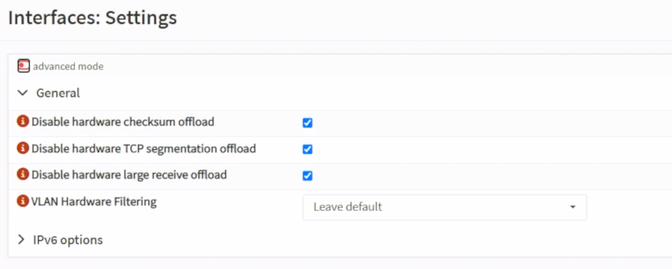
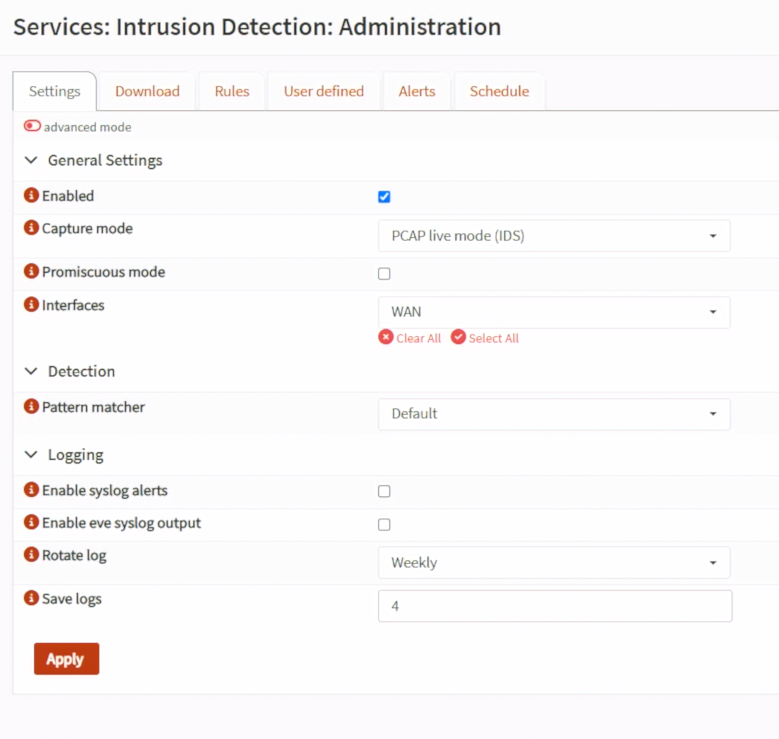
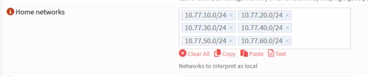
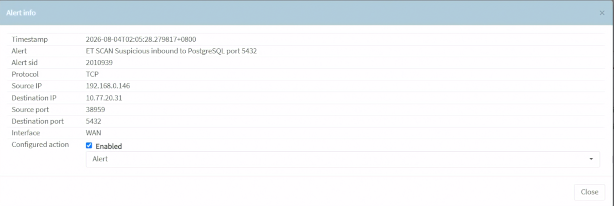
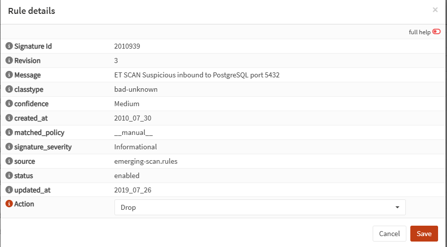
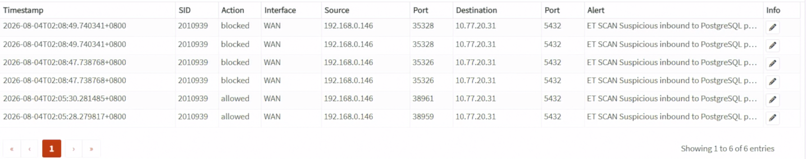

Day 18｜在網路邊界發現並阻擋威脅：OPNsense Suricata IDS／IPS 與單點風險
對應文章：Day 18｜在網路邊界發現並阻擋威脅：OPNsense Suricata IDS／IPS 與單點風險
本日先用 IDS Alert Mode 確認介面與規則，再切換 IPS。不要直接在唯一 WAN 管理路徑啟用阻擋模式。
1. 增加 fw01 記憶體與建立快照
確認 VM 110 至少 3GB RAM。啟用大量 Ruleset 前觀察實際用量；若 Suricata 發生 OOM，先增加到 4GB，而不是刪除所有安全規則。
變更前：
- 下載最新
config.xml。 - 在 PVE 建立短期 Snapshot
before-suricata。 - 保持 PVE Console 與 SSH Tunnel 可用。
Snapshot 只用於短期回復，不取代設定備份。
2. 關閉 Hardware Offloading
到 Interfaces → Settings，將以下三個以 Disable 開頭的選項全部勾選：
Disable hardware checksum offload
Disable hardware TCP segmentation offload
Disable hardware large receive offload
這三個欄位是負向命名，因此「勾選」代表停用 Offloading，不是啟用它。Save／Apply，依畫面提示重新啟動。虛擬化環境若保留 Offloading，Packet Capture 與 IPS 可能看到不完整或錯誤的封包狀態。

圖（一）停用 OPNsense 的 Hardware Offloading。
3. 啟用 IDS Alert Mode
到 Services → Intrusion Detection → Administration → Settings：
- 勾選 Enabled。
- Capture mode 選
PCAP live mode (IDS)。新版介面不再提供獨立的 IPS Mode 核取方塊；這個模式只產生 Alert，不會丟棄封包。 - Promiscuous Mode 依介面需求保留預設。
- Interfaces 先選 WAN；要觀察跨 VLAN 流量時再加入承載 VLAN 的 Parent／對應介面。
- Home Networks 預設會帶入
192.168.0.0/16、10.0.0.0/8、172.16.0.0/12。這三筆是完整 RFC1918 私有位址範圍，而10.0.0.0/8已經包含所有10.77.x.x，因此不要在預設值後面重複追加 Lab 網段。 - 本系列要讓 HOME_NET 精確代表 OPNsense 後方受保護的網路，因此移除上述三筆預設值，改為逐筆加入
10.77.10.0/24、10.77.20.0/24、10.77.30.0/24、10.77.40.0/24、10.77.50.0/24、10.77.60.0/24。不要加入模擬 WAN192.168.0.0/24、Ceph10.77.70.0/24或 Corosync10.77.80.0/24。 - Save／Apply。

圖（二）啟用 IDS Alert Mode 並選擇監看介面。

圖（三）將 HOME_NET 限定為本 Lab 受保護網段。
4. 下載與啟用 Ruleset
到 Download 頁面：
- 選取完整來源
ET open/emerging.rules，按 Download／Update Rules。Download 頁面負責下載整包 ET Open，不是在這一頁逐一挑選 Scan、Policy 等分類。 - 下載完成後進入
Services→Intrusion Detection→Administration→Rules。 - 搜尋 SID
2010939，找到ET SCAN Suspicious inbound to PostgreSQL port 5432。 - 按該規則右側的 Edit 鉛筆圖示，勾選
Enabled，將Action設為Alert，再按Save。 - 回到 Rules 頁面按
Apply，重新搜尋 SID2010939，確認規則已經 Enabled，而且 Action 是 Alert。
這裡操作的是下載規則的單條手動覆寫，不要進入 Administration → User defined。User defined 的 Source IP、Destination IP、SSL/Fingerprint、Bypass 等欄位用來建立新的自訂規則，不能用來啟用既有的 ET Open 規則。
4.1 可選：改用 Policy 管理整個 Scan 分類
若希望一次管理 emerging-scan 裡的一批規則，可以用 Policy 取代前面的單條 Edit。兩種方法擇一使用；本日預設仍採用 SID 2010939 的單條手動覆寫。
- 進入
Services→Intrusion Detection→Policy→Policies，按Add。 - 依序設定：
| 欄位 | 設定值 | 作用 |
|---|---|---|
| Enabled | 勾選 | 啟用這筆 Policy |
| Priority | 10 |
數字越低越優先；從 10 開始可替日後更高優先的 Policy 保留較小編號 |
| Rulesets | ET open/emerging-scan.rules |
只比對 Scan 分類；不同版本可能省略 .rules |
| Action | Disabled |
只挑出目前尚未啟用的規則 |
| Rules | 全部留空 | 不再使用產品、部署位置等中繼資料縮小範圍 |
| New action | Alert |
將符合條件的規則啟用為只告警 |
| Description | LAB_ET_ALERT |
識別這筆 Lab Policy |
- 按
Save，再按頁面上的Apply。 - 回到
Administration→Rules，以scan或matched_policy篩選，確認符合條件的規則已經 Enabled、Action 是 Alert，套用來源是LAB_ET_ALERT。
這筆 Policy 會處理 emerging-scan 中所有符合條件的 Disabled 規則，不只 SID 2010939。如果先前已對 SID 2010939 建立手動覆寫，請保留本日預設作法，不要再疊加這筆 Policy；要全面改用 Policy 時，應先到 Policy → Rule adjustments 移除對應的手動調整，再重新 Apply。
本日只手動啟用 emerging-scan 分類中的 SID 2010939，因為它直接對應接下來送往 PostgreSQL Port 的 Nmap 探測，測試流量可由自己控制、停止與重複。其他分類留到服務存在且有明確觀察目的時再啟用：
emerging-scan：包含連接埠掃描、服務探測與部分 Nmap 行為的偵測規則；本日只啟用其中一條可重現的規則。emerging-policy：偵測代理工具、異常協定使用方式及可能違反組織政策的流量。它不一定代表入侵，而且較容易產生雜訊，本日不啟用。emerging-dns：可選分類，用於觀察可疑 DNS 查詢與已知異常行為，本日不啟用。emerging-web_server：為後續 Nginx／應用服務提供 Web Server 攻擊與異常請求的偵測規則；Day 18 先下載，等對應服務與流量存在後再展示命中結果。emerging-malware：如果目前版本有顯示，可用來偵測已知惡意軟體與部分 C2 通訊；沒有顯示就略過。正常 Lab 不應為了命中它而下載或執行真正惡意程式。
本日暫時不要啟用整套 dos、exploit、current_events、p2p、games、voip、mobile_malware 或所有 ET Open 規則。它們不是全部沒有價值，而是與目前 Lab 服務不一定相關；一次啟用過多會增加記憶體用量、告警雜訊與誤判排查工作，也不利於解釋是哪一類規則產生結果。
Ruleset 是規則來源；規則的 Enabled 狀態與 Action 可以由 Policy 批次管理，也可以在 Rules 頁面手動覆寫。OPNsense 官方建議大量或長期管理時使用 Policy，因為它能按照 Ruleset、既有 Action 與規則中繼資料批次套用設定。本日只驗證一條規則，因此直接在 Rules 頁面手動覆寫；第 6 節也只把同一條已命中的 Signature 改為 Drop，不把整個 emerging-scan 或其他分類一次全部切成 Drop。
Policy 位於 Services → Intrusion Detection → Policy，不是 Administration 裡的分頁。本日預設不建立 Policy，避免為了單一 SID 改動整個 Scan 分類；需要示範批次管理時，可以改做 4.1 節，但不要和單條手動覆寫混在一起。
記錄 Ruleset 更新時間與啟用數量。
5. 產生受控測試流量
Day 18 尚未建立 Day 25 的 proxy01 10.77.20.21，因此本日改用 Day 16 已建立的 app01 10.77.20.31 當作受控目標。
5.1 先確認 PVE L0 的封包會經過 fw01
在 PVE L0 執行：
ip route get 10.77.20.31
如果結果顯示 via 192.168.0.1，代表封包被送往原本的家用路由器，根本沒有經過 fw01，因此 Suricata 不可能看到。加入只針對本次測試目標的暫時 Route：
ip route replace 10.77.20.31/32 via 192.168.0.84 dev vmbr0
ip route get 10.77.20.31
第二次結果必須顯示 via 192.168.0.84 dev vmbr0。192.168.0.84 是目前 fw01 的 WAN 位址；若 Interfaces → Overview 顯示的 fw01 WAN 已改變，這裡也要使用實際位址。
5.2 用 Packet Capture 證明路徑
到 OPNsense Interfaces → Diagnostics → Packet Capture：
- Interface 選
WAN。 - Address Family 選
IPv4。 - Protocol 選
TCP。 - Host Address 填 PVE L0
192.168.0.146。 - Count 填
100，開始 Capture。
回 PVE L0 執行：
sudo apt update
sudo apt install -y nmap
sudo nmap -sS -Pn -p 22,80,443,5432 10.77.20.31
停止 Capture 並檢視結果。必須看到來源 192.168.0.146、目的 10.77.20.31 的 TCP SYN；若完全沒有封包，先處理 Route，不要繼續修改 IDS Ruleset。
5.3 核對 ET Open Alert
到 Services → Intrusion Detection → Administration → Alerts，依來源 192.168.0.146、目的 10.77.20.31 或 SID 2010939 過濾。本次實測命中結果為：
Interface：WAN
Action：allowed
Source：192.168.0.146
Destination：10.77.20.31
Destination Port：5432
SID：2010939
Signature：ET SCAN Suspicious inbound to PostgreSQL port 5432
allowed 是正常結果，因為目前 Capture mode 是 PCAP live mode (IDS)，只告警而不丟棄封包。既然 ET Open 已經穩定命中 SID 2010939，本系列不需要另外建立 User defined 測試規則。

圖（四）Alert 詳細資料顯示 SID 2010939、測試來源與目的，設定動作為 Alert。
若仍沒有 Alert：
- 確認流量真的經過所選介面。
- 確認 Intrusion Detection 狀態是 Running，而且 Capture mode 是
PCAP live mode (IDS)。 - 到 Rules 搜尋 SID
2010939，確認它已由手動覆寫設為 Enabled／Alert。 - 清除 Alerts 頁面的時間、Action 或 Ruleset 篩選後重新整理。
- 不要靠重複掃描外部網站測試。
6. 切換 IPS
確認 Alert Mode 正常後：
- 到
Services→Intrusion Detection→Administration→Rules搜尋 SID2010939，按 Edit，只將這一條已驗證的 ET 規則 Action 由 Alert 改成 Drop，再按 Save 與 Apply。不要把整個emerging-scan設成 Drop。 - 回到 Settings，將 Capture mode 從
PCAP live mode (IDS)改成Netmap (IPS)。本 Lab 不選Divert (IPS)；Divert 模式還必須另外建立帶有 Divert-to 的新版 Firewall Rule。 - Apply 後重做同一項測試。
- 在 Alerts 確認 SID
2010939的 Action 從allowed變成blocked／drop。由於 WAN Firewall 本來就會拒絕未授權的連線，Nmap 結果可能前後相同；本次以 Suricata Alert Action 的變化作為 IPS 已執行 Drop 的主要證據。

圖（五）單條規則 2010939 的 Action 設為 Drop。

圖（六）相同 SID 的紀錄先顯示 allowed，切換 Netmap 與 Drop 後顯示 blocked。
如果管理連線中斷，從 PVE Console 停用 Intrusion Detection 或還原設定，不在失聯狀態盲目修改更多規則。
測試完成後可在 PVE L0 移除本次暫時 Route：
sudo ip route del 10.77.20.31/32